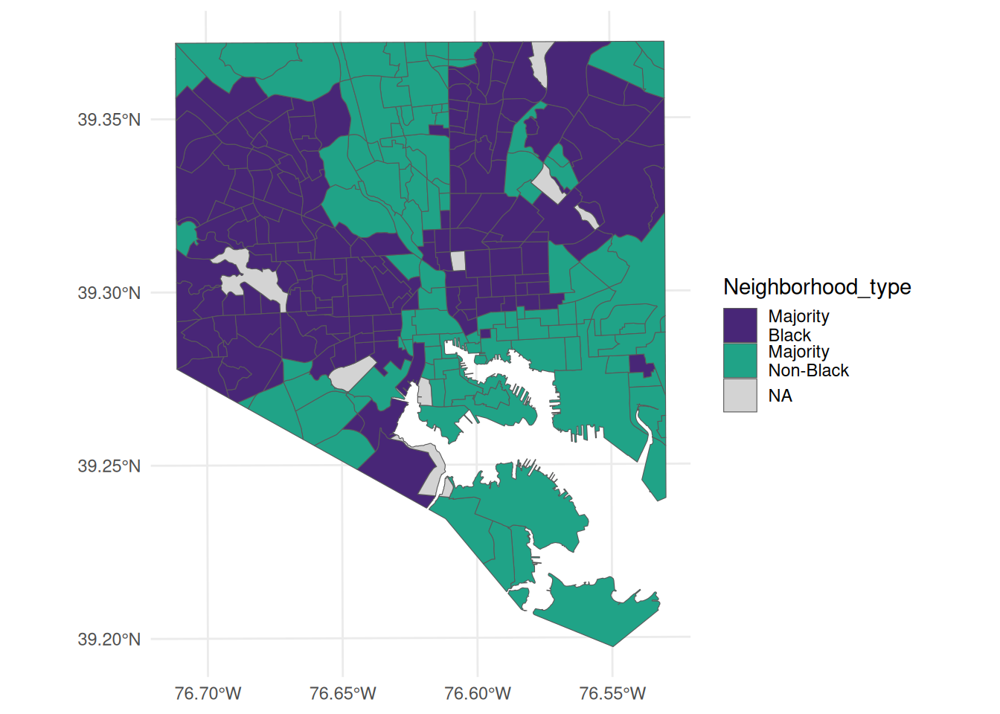
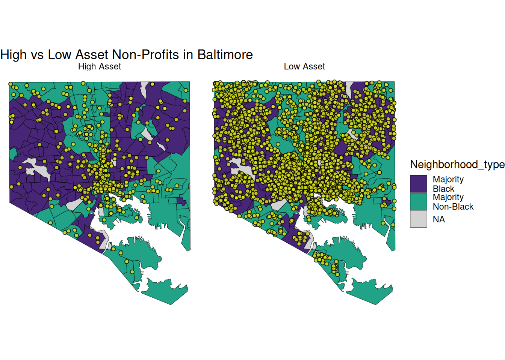
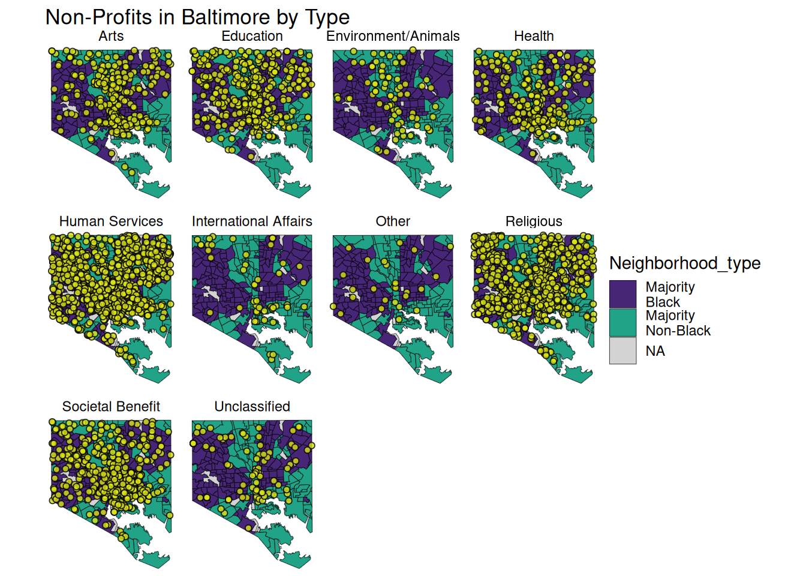
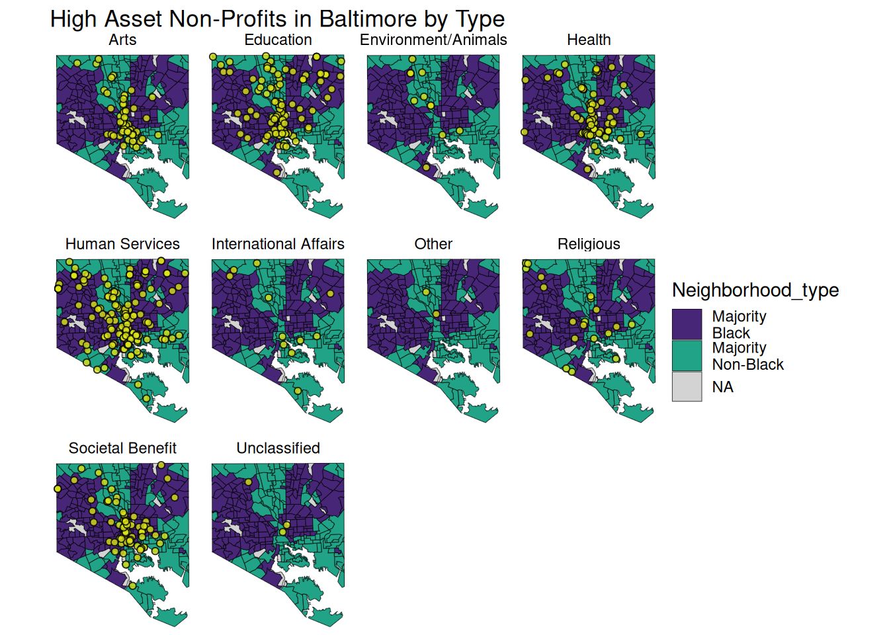

Maps
library(sf)
library(tidyverse)
df_simplified <- read_rds(here::here("data/processed/formaps.rds")) # org and shape data
neighborhoods_shape <- read_rds(here::here("data/processed/neighborhood_shape_data.rds"))#neighborhood stat data (read into R)
Neighborhood Demographics
# make data at neighborhood level to plot maps
neighborhoods_sf <- st_as_sf(neighborhoods_shape) # convert to sf object
neighborhoods_sf <- neighborhoods_sf %>% mutate(Percent_AA
= round(Blk_AfAm/Population*100, digits = 2)) %>% # make our variables like before but this time at neighborhood level only
# create new Majority_AA variable that indicates if Percent_AA is greater than 50% or not %>%
mutate(Majority_AA = case_when(
Percent_AA >= 50 ~ "Yes",
Percent_AA < 50 ~ "No")) %>%
# create a new variable about this in text
mutate(Neighborhood_type = case_when(
Percent_AA >= 50 ~ "Majority\nBlack",
Percent_AA < 50 ~ "Majority\nNon-Black")) %>%
# make this a factor and order by level appearance in the data
mutate(Neighborhood_type = as_factor(Neighborhood_type),
Neighborhood_type = forcats::fct_inorder(Neighborhood_type))
neighborhood_dem <- ggplot() +geom_sf(data = neighborhoods_sf, aes(fill = Neighborhood_type))+
scale_fill_manual(values = c("Majority\nBlack" = "#482677FF", "Majority\nNon-Black" = "#20A387FF"), na.value = "#D3D3D3")+
theme_minimal()
neighborhood_dem

Map of High vs Low Asset Orgs
asset_plot_high_Vs_low <- neighborhood_dem +
geom_sf(data = df_simplified, alpha = 0.8, shape = 21, color ="black", fill = "#DCE319FF")+ facet_grid(~ASSET_High_text)+
theme_void() +
labs(title = "High vs Low Asset Non-Profits in Baltimore")
asset_plot_high_Vs_low

Map of different types of orgs by asset
asset_plot_all_faceted <- neighborhood_dem +
geom_sf(data = df_simplified, alpha = 0.8, shape = 21, color ="black", fill = "#DCE319FF")+ facet_wrap(~NTEE_text, ncol = 4 )+
theme_void() +
labs(title = "Non-Profits in Baltimore by Type")
asset_plot_all_faceted

High Asset Non-Profits in Baltimore by Type
data_to_map <-df_simplified %>% filter(ASSET_High_text == "High Asset")
asset_plot <- neighborhood_dem +
geom_sf(data = data_to_map, alpha = 0.8, shape = 21, color ="black", fill = "#DCE319FF")+ facet_wrap(~NTEE_text, ncol = 4 )+
theme_void() +
labs(title = "High Asset Non-Profits in Baltimore by Type")
asset_plot

CiMgTWFwcwoKYGBge3J9CmxpYnJhcnkoc2YpCmxpYnJhcnkodGlkeXZlcnNlKQoKCmRmX3NpbXBsaWZpZWQgPC0gcmVhZF9yZHMoaGVyZTo6aGVyZSgiZGF0YS9wcm9jZXNzZWQvZm9ybWFwcy5yZHMiKSkgIyBvcmcgYW5kIHNoYXBlIGRhdGEKbmVpZ2hib3Job29kc19zaGFwZSA8LSByZWFkX3JkcyhoZXJlOjpoZXJlKCJkYXRhL3Byb2Nlc3NlZC9uZWlnaGJvcmhvb2Rfc2hhcGVfZGF0YS5yZHMiKSkjbmVpZ2hib3Job29kIHN0YXQgZGF0YSAocmVhZCBpbnRvIFIpCgpgYGAKCgojIE5laWdoYm9yaG9vZCBEZW1vZ3JhcGhpY3MKCmBgYHtyfQoKIyBtYWtlIGRhdGEgYXQgbmVpZ2hib3Job29kIGxldmVsIHRvIHBsb3QgbWFwcyAKbmVpZ2hib3Job29kc19zZiA8LSBzdF9hc19zZihuZWlnaGJvcmhvb2RzX3NoYXBlKSAjIGNvbnZlcnQgdG8gc2Ygb2JqZWN0Cm5laWdoYm9yaG9vZHNfc2YgPC0gbmVpZ2hib3Job29kc19zZiAlPiUgbXV0YXRlKFBlcmNlbnRfQUEKICA9IHJvdW5kKEJsa19BZkFtL1BvcHVsYXRpb24qMTAwLCBkaWdpdHMgPSAyKSkgICU+JSAjIG1ha2Ugb3VyIHZhcmlhYmxlcyBsaWtlIGJlZm9yZSBidXQgdGhpcyB0aW1lIGF0IG5laWdoYm9yaG9vZCBsZXZlbCBvbmx5CgogICMgY3JlYXRlIG5ldyBNYWpvcml0eV9BQSB2YXJpYWJsZSB0aGF0IGluZGljYXRlcyBpZiBQZXJjZW50X0FBIGlzIGdyZWF0ZXIgdGhhbiA1MCUgb3Igbm90ICU+JQogIG11dGF0ZShNYWpvcml0eV9BQSA9IGNhc2Vfd2hlbigKICAgIFBlcmNlbnRfQUEgPj0gNTAgfiAiWWVzIiwgCiAgICBQZXJjZW50X0FBIDwgIDUwIH4gIk5vIikpICU+JQogICMgY3JlYXRlIGEgbmV3IHZhcmlhYmxlIGFib3V0IHRoaXMgaW4gdGV4dAogICBtdXRhdGUoTmVpZ2hib3Job29kX3R5cGUgPSBjYXNlX3doZW4oCiAgICBQZXJjZW50X0FBID49IDUwIH4gIk1ham9yaXR5XG5CbGFjayIsIAogICAgUGVyY2VudF9BQSA8ICA1MCB+ICJNYWpvcml0eVxuTm9uLUJsYWNrIikpICU+JSAKICAjIG1ha2UgdGhpcyBhIGZhY3RvciBhbmQgb3JkZXIgYnkgbGV2ZWwgYXBwZWFyYW5jZSBpbiB0aGUgZGF0YQogIG11dGF0ZShOZWlnaGJvcmhvb2RfdHlwZSA9IGFzX2ZhY3RvcihOZWlnaGJvcmhvb2RfdHlwZSksCiAgICAgICAgIE5laWdoYm9yaG9vZF90eXBlID0gZm9yY2F0czo6ZmN0X2lub3JkZXIoTmVpZ2hib3Job29kX3R5cGUpKQoKCiBuZWlnaGJvcmhvb2RfZGVtIDwtIGdncGxvdCgpICtnZW9tX3NmKGRhdGEgPSBuZWlnaGJvcmhvb2RzX3NmLCBhZXMoZmlsbCA9IE5laWdoYm9yaG9vZF90eXBlKSkrCiAgIHNjYWxlX2ZpbGxfbWFudWFsKHZhbHVlcyA9IGMoIk1ham9yaXR5XG5CbGFjayIgPSAiIzQ4MjY3N0ZGIiwgIk1ham9yaXR5XG5Ob24tQmxhY2siID0gIiMyMEEzODdGRiIpLCBuYS52YWx1ZSA9ICIjRDNEM0QzIikrCiAgICB0aGVtZV9taW5pbWFsKCkKIG5laWdoYm9yaG9vZF9kZW0KCmBgYAoKCiMgTWFwIG9mIEhpZ2ggdnMgTG93IEFzc2V0IE9yZ3MKCgpgYGB7cn0KYXNzZXRfcGxvdF9oaWdoX1ZzX2xvdyA8LSBuZWlnaGJvcmhvb2RfZGVtICsgCiAgICBnZW9tX3NmKGRhdGEgPSBkZl9zaW1wbGlmaWVkLCBhbHBoYSA9IDAuOCwgc2hhcGUgPSAyMSwgY29sb3IgPSJibGFjayIsIGZpbGwgPSAiI0RDRTMxOUZGIikrIGZhY2V0X2dyaWQofkFTU0VUX0hpZ2hfdGV4dCkrCiAgICB0aGVtZV92b2lkKCkgKwogICAgIGxhYnModGl0bGUgPSAiSGlnaCB2cyBMb3cgQXNzZXQgTm9uLVByb2ZpdHMgaW4gQmFsdGltb3JlIikgCgoKYXNzZXRfcGxvdF9oaWdoX1ZzX2xvdwoKYGBgCgoKIyBNYXAgb2YgZGlmZmVyZW50IHR5cGVzIG9mIG9yZ3MgYnkgYXNzZXQKYGBge3J9Cgphc3NldF9wbG90X2FsbF9mYWNldGVkIDwtIG5laWdoYm9yaG9vZF9kZW0gKyAKICAgIGdlb21fc2YoZGF0YSA9IGRmX3NpbXBsaWZpZWQsIGFscGhhID0gMC44LCBzaGFwZSA9IDIxLCBjb2xvciA9ImJsYWNrIiwgZmlsbCA9ICIjRENFMzE5RkYiKSsgZmFjZXRfd3JhcCh+TlRFRV90ZXh0LCBuY29sID0gNCApKwogICAgdGhlbWVfdm9pZCgpICsKICBsYWJzKHRpdGxlID0gIk5vbi1Qcm9maXRzIGluIEJhbHRpbW9yZSBieSBUeXBlIikgCmFzc2V0X3Bsb3RfYWxsX2ZhY2V0ZWQKYGBgCgojIEhpZ2ggQXNzZXQgTm9uLVByb2ZpdHMgaW4gQmFsdGltb3JlIGJ5IFR5cGUKCmBgYHtyfQpkYXRhX3RvX21hcCA8LWRmX3NpbXBsaWZpZWQgJT4lIGZpbHRlcihBU1NFVF9IaWdoX3RleHQgPT0gIkhpZ2ggQXNzZXQiKSAKCmFzc2V0X3Bsb3QgPC0gbmVpZ2hib3Job29kX2RlbSArIAogICAgZ2VvbV9zZihkYXRhID0gZGF0YV90b19tYXAsIGFscGhhID0gMC44LCBzaGFwZSA9IDIxLCBjb2xvciA9ImJsYWNrIiwgZmlsbCA9ICIjRENFMzE5RkYiKSsgZmFjZXRfd3JhcCh+TlRFRV90ZXh0LCBuY29sID0gNCApKwogICAgdGhlbWVfdm9pZCgpICsKICBsYWJzKHRpdGxlID0gIkhpZ2ggQXNzZXQgTm9uLVByb2ZpdHMgaW4gQmFsdGltb3JlIGJ5IFR5cGUiKSAKYXNzZXRfcGxvdApgYGAKCgoKCgo=